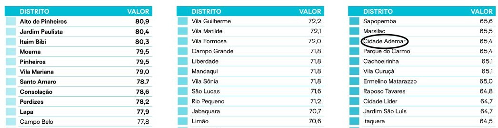
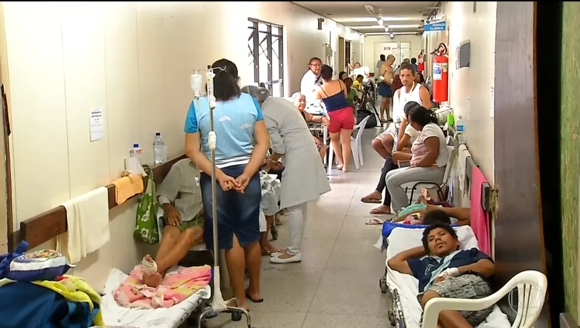

Média de idade (em anos) com que as pessoas
morreram (de acordo com o local de residência),
por distrito
Este Gráfico mostra a desigualdade de saúde em bairros de São Paulo, onde bairros de alta
classe estão com morte de ate 80 anos e em bairros mais pobres estao chegando ate 60 anos, por que isso?
Essas mortes podem ser por muitas ocasiões sim, mas uma delas é por falta de uma vida mais saúdavel por nao ter lugares certos pra praticar um esporte ou ter uma alimentação certa por causa do dinheiro.


Paciente lotam corredores dos hospitais públicos do RN à espera de cirurgias
Em um vídeo gravado com um celular, é possível ver acompanhantes de pacientes dormindo em um papelão no chão, no corredor do Hospital Deoclécio Marques, em Parnamirim, na região metropolitana de Natal. O pedreiro Francisco Sales está na unidade há uma semana, à espera de uma cirurgia no pé. Passa o dia na cadeira de rodas e na hora de dormir, também vai para o chão.
"Tive que passar minha maca para um amigo meu que está pior que eu e eu dormi aqui no chão, onde eu estou dormindo. Só o corbertor no chão", disse.
Também sem previsão para ser operada, Maria de Lourdes só não está dormindo no chão porque um outro paciente cedeu um maca. Mas ela passou a noite numa cadeira. "A pessoa passar a noite numa cadeira e doente do jeito que vivo...", lamenta.
Pacientes lotam corredores dos hospitais públicos do RN, G1.globo.com